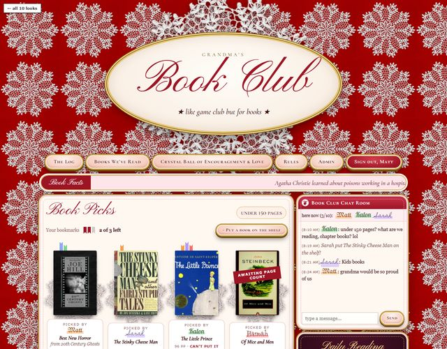
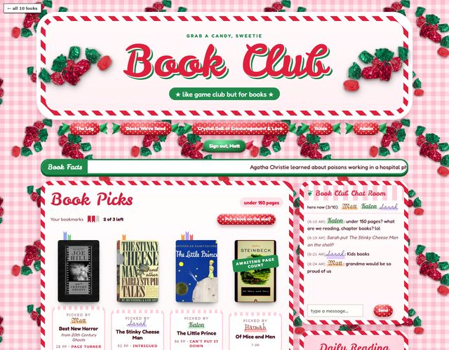
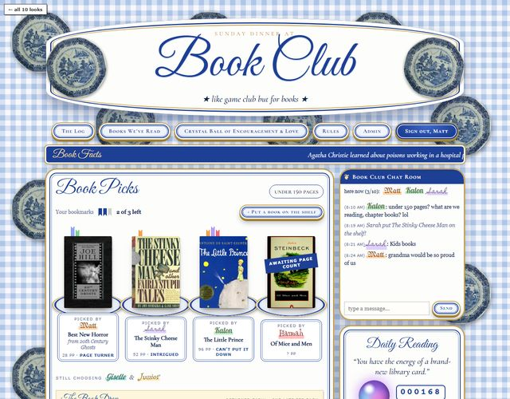
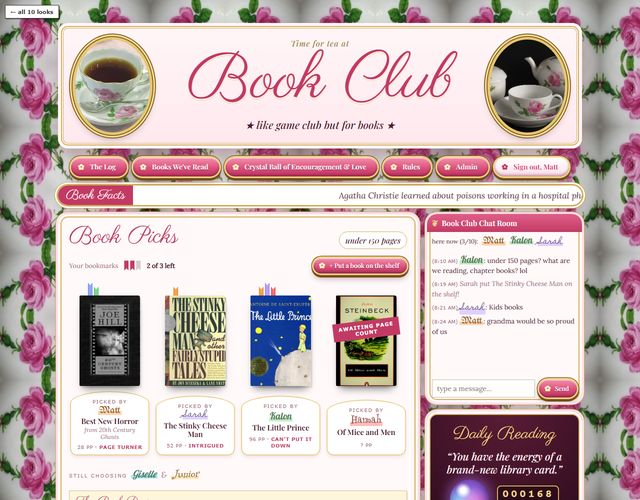
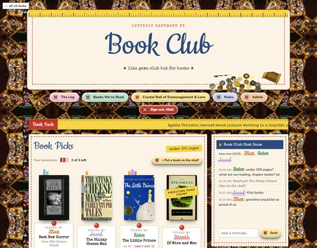
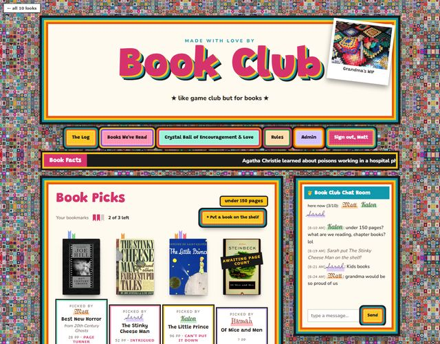
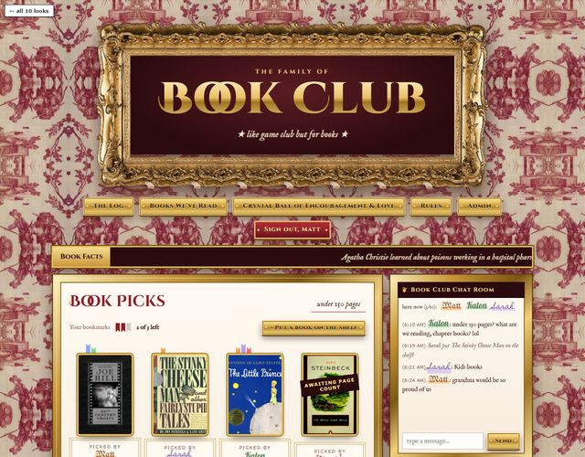
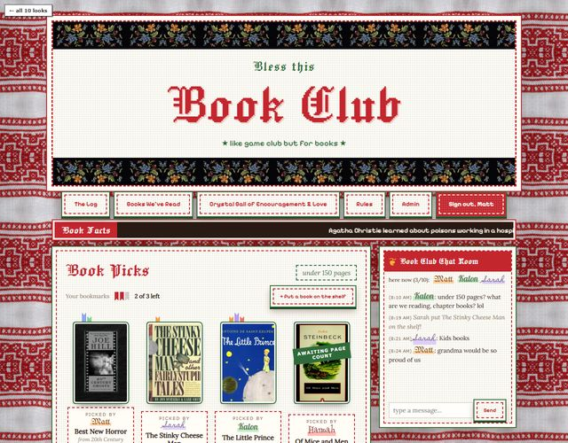
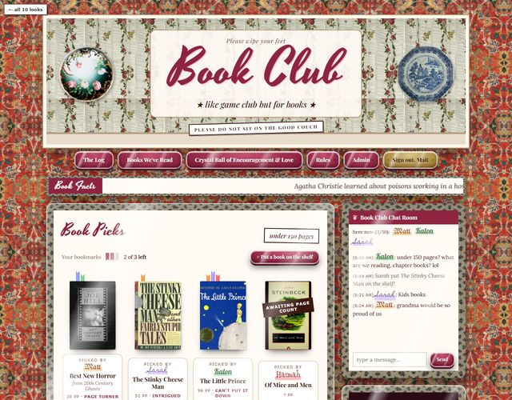

Real crocheted doilies on red velvet, a cameo plaque masthead, cameo-brooch buttons, books standing on doilies.

Real strawberry hard candies on pink gingham, peppermint-stripe frames, and buttons that are wrapped candies.

Real Blue Willow plates on a blue gingham tablecloth, porcelain panels with cobalt and gold rims, china-plate buttons.

Real rose-painted porcelain repeated as wallpaper, framed tea-set photos in the header, gilded pink enamel buttons.

A real tin of sewing buttons as the wallpaper, tape-measure trim, pinked-edge fabric panels, and buttons that are actual sewing buttons.

A real granny-square afghan as the wallpaper, crochet-round borders on every panel, buttons that are little granny squares.

Real red toile on the walls, the masthead hung in a real carved gilt frame, engraved brass-plate buttons.
Real green chenille bedspread as the wallpaper, panels framed in real bobbin lace, Grandma's African violets on the windowsill.

Real red cross-stitch on linen as the wallpaper, a stitched sampler masthead trimmed with a real embroidered floral band, stitched-patch buttons.

Grandma's real Persian rug underfoot, rosebud-stripe wallpaper with real collector plates, and everything covered in clear plastic. Do not sit.